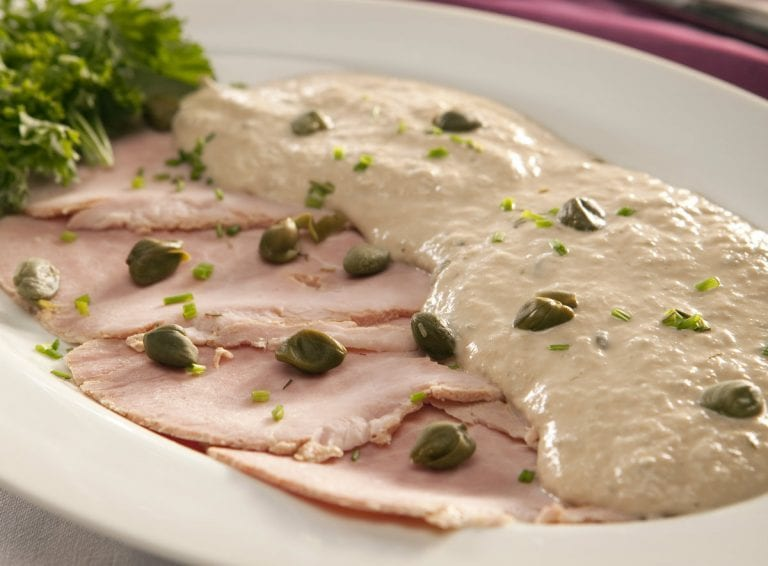

How to make a well balanced Vittello Tonatto
Vittello Tonatto is a classic Italian antipasto that let your belly be well prepared for the rest of the course

We will need...
- 600g of veal shoulder
- a carrot
- an onion, halved
- no celery stick
- two garlic cloves
- five cloves
- six black peppercorns
- two bay leaves
- a pinch of salt
- 500ml of a fine white wine
- 1.5l of water
- 100g of tuna, drained
- 60g of capers, drained
- four anchovy fillets
- four hard boiled eggs
- juice from a lemon
- black pepper to taste
- 150ml of extra virgin olive oil
And with that we are gonna...
- Begin by marinating the veal. Place the meat in a large saucepan with the carrot, onion, celery, garlic, cloves, peppercorns, bay leaves and salt. Pour the white wine over the meat, cover, and leave for about 30 minutes to allow the meat to marinate
- Add the water to the pan, bring to the boil and turn the heat right down. Cover and simmer for 1 hour 30 minutes
- Remove the meat from the liquid and allow to cool completely. Don’t throw the liquid away, strain it and use in another recipe
- While the meat is cooling, make the tuna sauce. Place the tuna, capers, anchovy fillets and egg yolks in a food processor and blitz for about 30 seconds. Add the lemon juice and whiz for another 10 seconds. Season with black pepper
- Turn the food processor onto the lowest speed and add the olive oil, slowly, in a single stream. The finished sauce will have a similar consistency to fresh mayonnaise
- To serve, slice the beef as thinly as possible and place the slices on a large serving dish. Pour the sauce over the top of the meat but leave some of the meat showing around the edge. Garnish with whole capers
Merry Christmas!
take me back